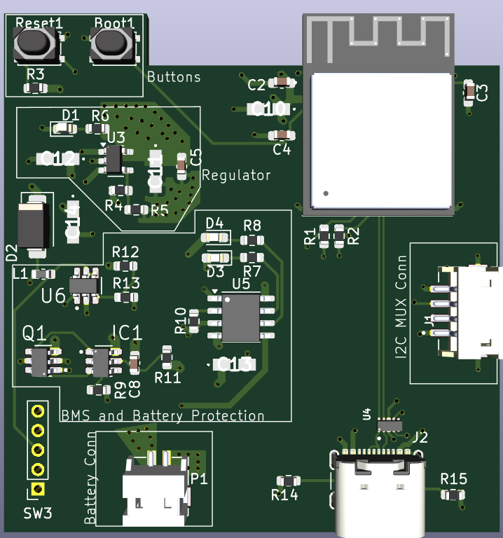
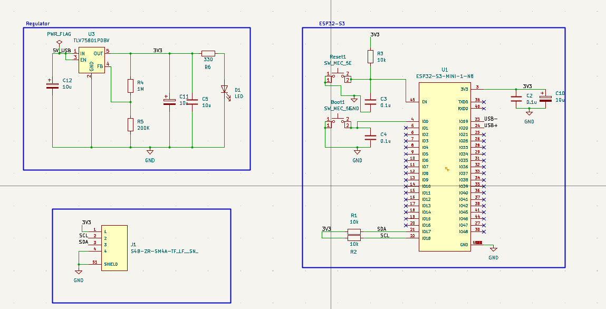
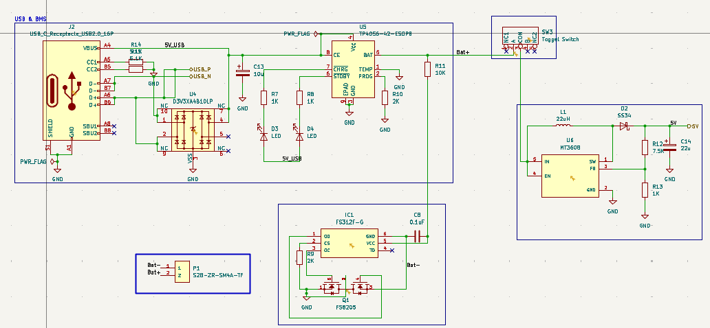
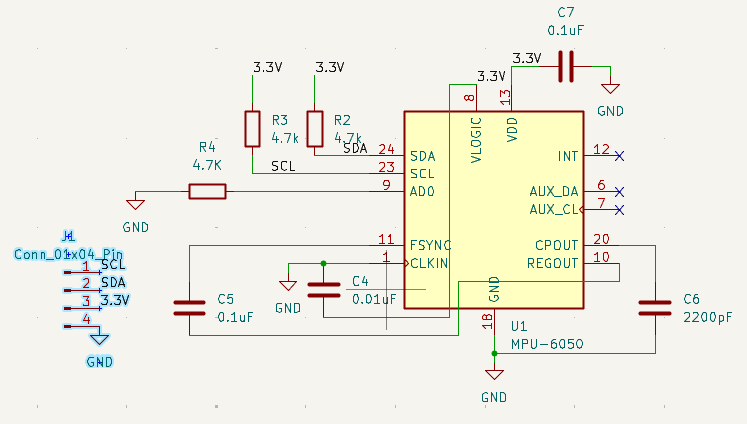
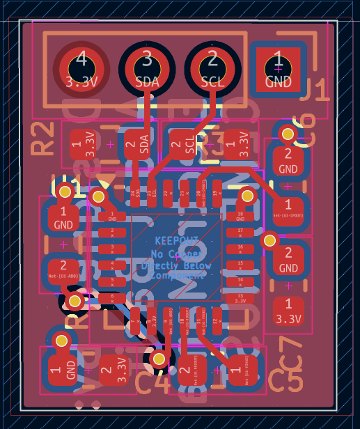
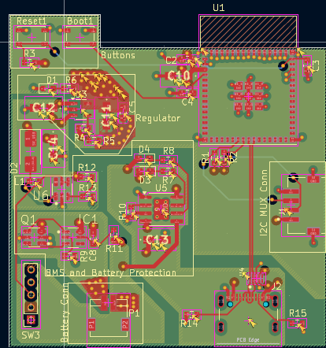

A battery-powered ESP32-S3 sensor node with a fully custom Li-ion BMS and a purpose-built, reduced-footprint MPU-6050 IMU breakout module.

This project presents a compact, battery-powered ESP32-S3 sensor node built around a fully custom Battery Management System (BMS) and a purpose-built, miniaturized MPU-6050 IMU breakout module. Rather than using an off-the-shelf GY-521 breakout, the MPU-6050 was laid out on its own reduced-footprint PCB with only the essential support components, allowing it to be mounted remotely and connected back to the main board over a simple 4-pin I²C header. The main board integrates USB-C charging, battery protection, boost-regulated 5 V, and LDO-regulated 3.3 V logic supply around the ESP32-S3-MINI-1 module.
USB-C power enters through J2 and is protected on the data lines by the ESD diode array (U4) before reaching the TP4056 (U5), which charges the single-cell Li-ion battery and drives the CHRG/STDBY status LEDs. The battery is guarded by the FS312F-G protection IC (IC1) switching a pair of back-to-back FS8205 MOSFETs (Q1) against over-charge, over-discharge, and short-circuit conditions. From the protected battery rail, the MT3608 boost converter (U6) generates a stable 5 V USB rail, which the TLV75801 LDO (U3) then steps down to the 3.3 V logic supply for the ESP32-S3. The ESP32-S3 talks to the remote IMU module over I²C (SDA/SCL, with 10 kΩ pull-ups on the main board) through a 4-pin header.


To keep the IMU small enough for remote/flexible mounting, the MPU-6050 was broken out onto its own minimal PCB rather than reusing a bulky commercial module. The schematic keeps only what the sensor strictly needs: 4.7 kΩ pull-ups on SDA/SCL (R2, R3) and on AD0 (R4, tied low to fix the I²C address), 0.1 µF decoupling on VDD/VLOGIC (C7), CLKIN/FSYNC grounded through C4 (0.01 µF) and C5 (0.1 µF), and REGOUT decoupled with a 2200 pF capacitor (C6). Everything connects out through a single 4-pin header (SCL, SDA, 3.3V, GND). On the PCB, the layout follows InvenSense’s guidance of keeping copper out from directly beneath the MPU-6050 package, and the component count is trimmed to the bare minimum — shrinking the module well below the footprint of a standard breakout board.


The ESP32-S3-MINI module sits top-left with clean fan-out routing for its castellated pins. The charging, boost, and protection circuitry is grouped toward the bottom-right of the board, physically separating the switching power section from the RF and digital logic to reduce EMI coupling. A continuous ground pour runs beneath both sections, and the four test points (Bat+, Bat−, 3V3, GND) are broken out along the left edge for easy multimeter access during bring-up. The USB-C receptacle sits at the board edge alongside its adjacent ESD and CC configuration network.

Splitting the design into two purpose-built boards — a compact power/processing board with an integrated custom BMS, and a minimal, remotely-mountable MPU-6050 module — delivered a smaller, more flexible sensor node than would be possible with off-the-shelf breakout boards. The project reinforced practical skills across Li-ion charging and protection circuit design, switching regulator layout, and careful component selection for miniaturized sensor PCBs.